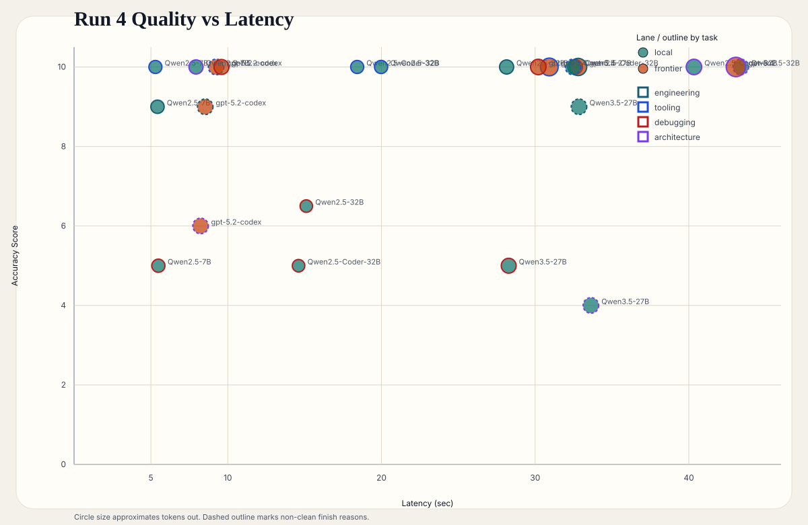
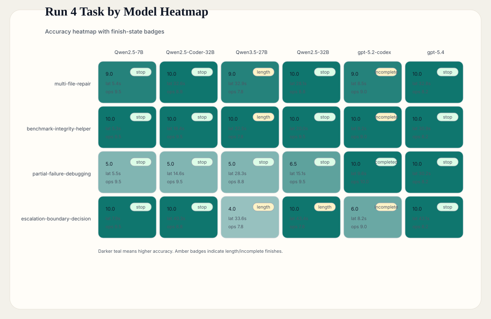
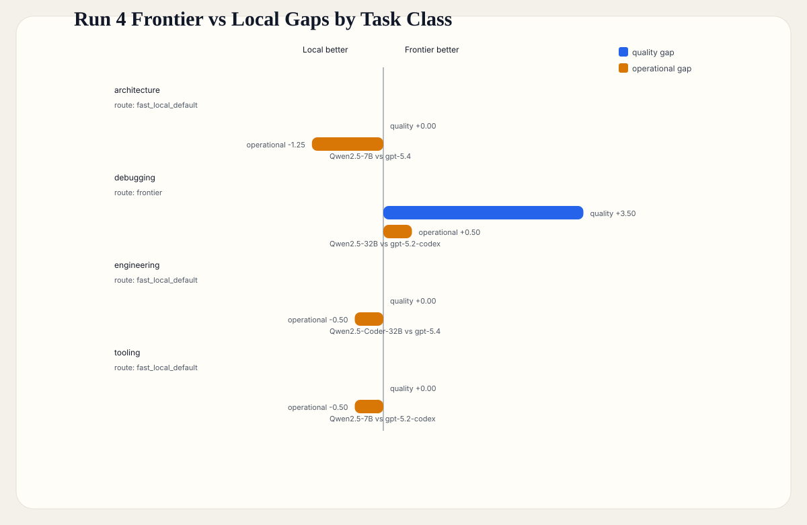
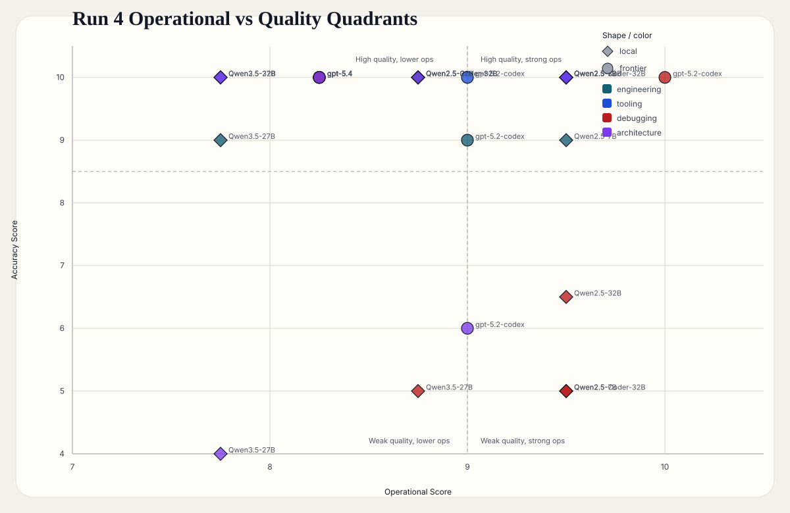

What This Suggests
Use the fast local default for routine bounded work, then escalate first to stronger local specialists before jumping to frontier for every non-trivial task.
MLX Lab Benchmark Review
This page is a presentation surface for Run 4. It focuses on where local models were already sufficient, where stronger local specialists made sense, and where frontier quality justified escalation by task class.
Start with the quality-versus-latency chart and then the task-class gap chart. Those two visuals contain most of the routing insight from Run 4. The heatmap and quadrant view are better for verifying that the interpretation stays coherent across all task families.
Use the fast local default for routine bounded work, then escalate first to stronger local specialists before jumping to frontier for every non-trivial task.
These are single-run, mlx-lab-only findings. They are useful for local routing guidance but are not promotion-grade evidence for canonical runtime policy.
Memory looked satisfactory for the tested workloads, but precise per-process memory telemetry was blocked, so that conclusion remains observational rather than instrumented.
This view shows whether better answers are actually buying enough to justify slower response. It is the quickest way to see why the fastest local model can still be the right operational default.

This chart makes the non-universal-winner story visible. It shows where task-specific routing matters more than any single leaderboard rank.

This directly answers the escalation question. It shows where frontier opens a real quality gap and where it only ties or loses on operational value relative to the best local lane.

This separates “best answer quality” from “best unattended default.” It helps explain why the strongest model on paper should not automatically become the first routing choice.
